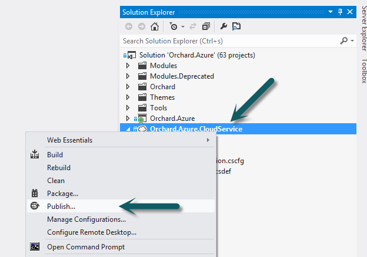
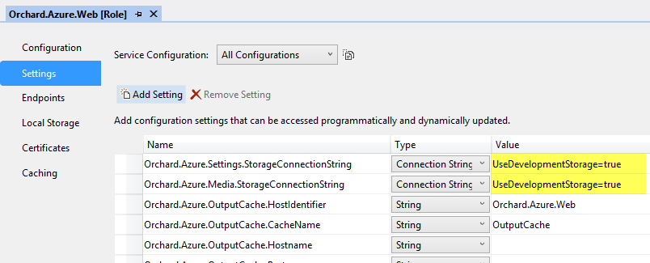

Orchard can be deployed to both Windows Azure Cloud Services and Windows Azure Web Sites. Orchard also ships with a number of integration features that takes advantage of Windows Azure services such as blob storage and caching, and that can be configured before deployment if needed. This topic walks you through the process of deploying Orchard to Windows Azure.
NOTE: The Windows Azure deployment process in Orchard has undergone a complete overhaul for version 1.7.1. For more information about what's changed see the What's new for Windows Azure in Orchard 1.7.1 topic.
Prerequisites
Before you can deploy Orchard to Windows Azure you need the following:
- Visual Studio 2012
- Windows Azure SDK 2.1 for Visual Studio 2012
- The Orchard source code
- An active Windows Azure subscription
Deploying Orchard to a Windows Azure Cloud Service
If you only plan to run a single role instance, deploying is extremely simple. Starting with version 1.7.1 of Orchard, deployment can be performed using the Windows Azure tooling in Visual Studio.
By default, Orchard uses a local file-based SQL Server CE database. This database won't suffice when running in a Windows Azure Cloud Service, because the Windows Azure fabric controller may decide to reimage your role instance at any time, without warning. When that happens, anything that has been written to the local hard drive in your role instance VM since it was created is lost, which means any changes made to the site since it was first deployed will be lost.
Obviously that's not acceptable, so we need to instead store the data in a shared database that will not be affected by role instance reimaging. To do this you need to create a Windows Azure SQL database that will be used to store Orchard data. You will configure Orchard to use this database later during setup.
With that out of the way, let's start by opening the Orchard.Azure.sln solution in Visual Studio.
NOTE: If you have AppFabric installed on your local machine (or have AppFabric-related assemblies in the GAC for some other reason) you need to make sure all the following assembly references in the
Orchard.Azure.Webproject have Copy Local set to True before publishing:Microsoft.ApplicationServer.\*,Microsoft.Data.\*,Microsoft.Web.\*,Microsoft.WindowsAzure.\*andMicrosoft.WindowsFabric.\*.
The only thing you have to configure before starting the deployment process is the storage account to use for shell settings. To do this, in Solution Explorer, navigate to Orchard.Azure.CloudService project, double click the Orchard.Azure.Web role and navigate to the Settings tab. Configure the connection string of the storage account you want to use:

Now to deploy the cloud service, right click the Orchard.Azure.CloudService project in Solution Explorer and select Publish, and follow the instructions in the publishing wizard to select subscription, cloud service, storage account and other publishing options. How to use the Windows Azure publishing tools in Visual Studio is beyond the scope of this topic, but they are pretty self-explanatory:

Once deployment has successfully completed, browse to the newly deployed Orchard site and go through setup. Specify the connection string to the Windows Azure SQL Database you created earlier:

Congratulations! Orchard is now fully configured for a single role instance on Windows Azure.
Using multiple role instances
Let's take it up a notch. You may want to scale out your cloud service to run on more than one role instance, either because you want to support a higher workload, or because the site is mission critical and you need some fault tolerance (using only a single instance of any one role in a Windows Azure Cloud Service voids the Windows Azure SLA).
Using multiple instances (also known as a web farm or a server farm) with Orchard requires some extra consideration.
In the most basic default configuration of Orchard, multiple instances can cause problems:
- Orchard media files are stored in the local file system. This won't work as the file systems or the different instances will soon start to diverge as users add/remove media.
- Orchard output caching and database caching (NHibernate second-level cache) use local memory for storage. This won't work as content might be updated on one instance and any cached copies invalidated there, while other instances continue unaware of this change.
- Session state is stored in local memory. This won't work because the cloud service load balancer has no session affinity so users will lose their state when moving between instances.
Luckily, Orchard has features to overcome each of these complications, but you must configure and enable them.
Preparing for multiple instances
First off, configure the number of instances you want to use in the cloud service project. In Solution Explorer, navigate to Orchard.Azure.CloudService project, double click the Orchard.Azure.Web role and navigate to the Configuration tab. Change the Instance count value from 1 to some higher number:

NOTE: You can also leave the instance count at
1and change it after deployment through the Windows Azure management portal.
Problem #1 in the list above we will deal with by enable the Windows Azure Media Storage feature later. To prepare for this, configure the storage accounts to use for shell settings and media storage. To do this, navigate to the Settings tab. Change the following settings to the storage account connection strings you want to use. You can use the same storage account for both, or any combination of different storage accounts:

Problem #2 will be addressed by enabling the Windows Azure Output Cache and Windows Azure Database Cache features. These don't need any preparation, as the cloud service project is already preconfigured for co-located role-based caching with the appropriate named caches configured.
Problem #3 is already taken care of for us. The cloud service is preconfigured to use the ASP.NET session state provider for Windows Azure Cache. This takes effect immediately after we deploy.
This section above describes only the most basic configuration steps and options. More detailed steps for enabling the Windows Azure Media Storage, Windows Azure Output Cache and Windows Azure Database Cache features for a Windows Azure Cloud Service, as well as more advanced configuration options, are described the following topics:
Deploying
After these few steps of preparation, you are now ready to deploy the cloud service. Right click the Orchard.Azure.CloudService project in Solution Explorer and select Publish, and follow the instructions in the publishing wizard to select subscription, cloud service, storage account and other publishing options. How to use the Windows Azure publishing tools in Visual Studio is beyond the scope of this topic, but they are pretty self-explanatory.
Once deployment has successfully completed, browse to the deployed Orchard site and go through setup. Specify the connection string to the Windows Azure SQL Database you created earlier:
Once setup has finished, navigate to the admin dashboard of the site and enable the following three features:
- Windows Azure Media Storage
- Windows Azure Output Cache
- Windows Azure Database Cache
Congratulations! Orchard is now fully configured for multiple role instances on Windows Azure. You can now scale out to as many role instances as you need and things will be handled.
NOTE: If you set the instance count to more than
1before deploying, you must now restart all role instances once to make sure they pick up the new configuration.
Deploying Orchard to a Windows Azure Web Site
Deploying to a Windows Azure Web Site is also done using the Windows Azure tooling in Visual Studio. However, instead of using the Orchard.Azure.sln as described for Windows Azure Cloud Services above, for a Windows Azure Web Site we use the normal Orchard.sln solution and publish the normal Orchard.Web project.
As with a cloud service, if you only plan to run a single instance, deploying is extremely simple.
The steps for using Windows Azure SQL Database as the database are the same as for a cloud service (create a Windows Azure SQL database beforehand and specify its connection string during setup).
Start by opening the Orchard.sln solution in Visual Studio.
Right click the solution node in Solution Explorer and select Rebuild. This step is necessary to get all modules and themes compiled, thereby having their resulting DLL files included in the published package; compilation of modules and themes does not happen automatically since they are not referenced by the Orchard.Web project being published.
To deploy the web site, right click the Orchard.Web project in Solution Explorer and select Publish, and follow the instructions in the publishing wizard. Click the Import button to import a web deploy publishing configuration from your Windows Azure subscriptions. How to use the Windows Azure publishing tools in Visual Studio is beyond the scope of this topic, but they are pretty self-explanatory.
Once deployment has successfully completed, browse to the newly deployed Orchard site and go through setup. Specify the connection string to the Windows Azure SQL Database you created earlier.
Congratulations! Orchard is now fully configured for a single instance Windows Azure Web Site.
Using multiple instances
As with cloud services, you need to do a little more configuration if you plan to scale out your web site to more than one instance.
The steps for enabling the Windows Azure Media Storage, Windows Azure Output Cache and Windows Azure Database Cache features for a Windows Azure Web Site are described the following topics: